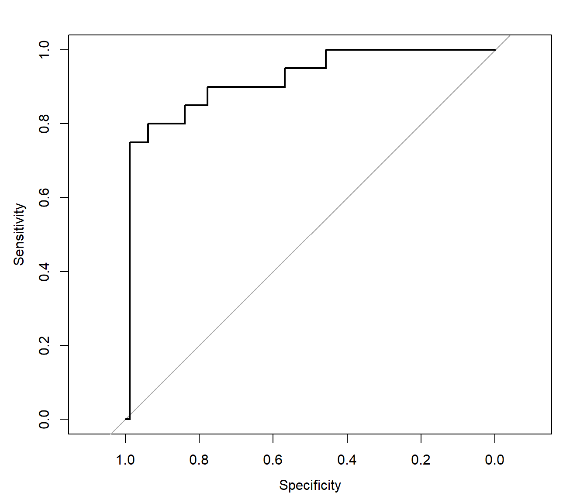
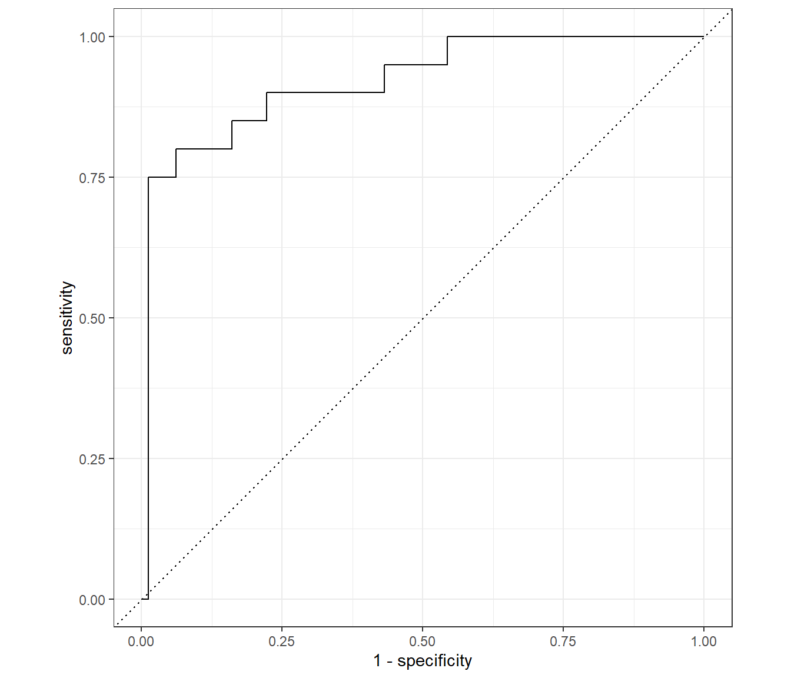
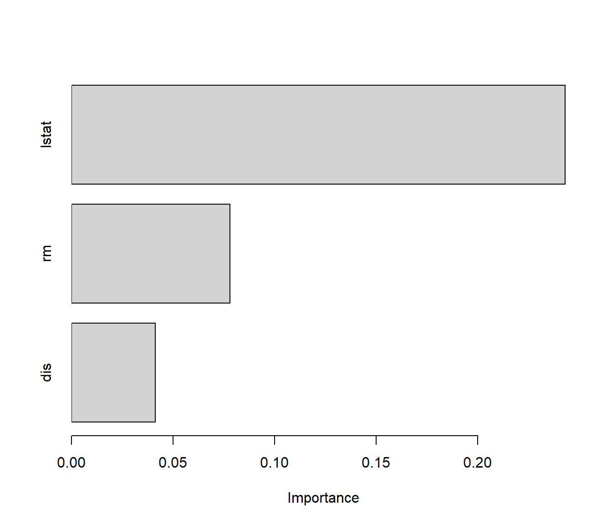
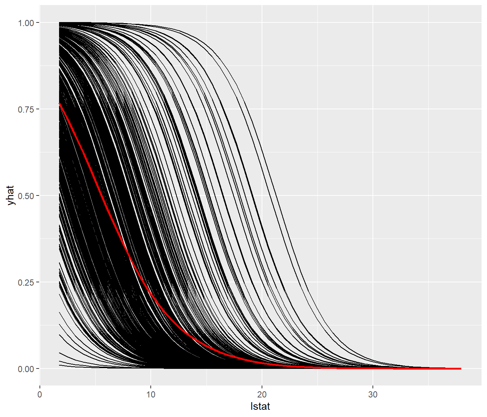

7.2 Modelización con tidymodels
Como se comentó en la Sección 7.1.2.2, cada paquete de modelización emplea su propia interfaz (argumentos, formato de los datos de entrada y salida…), lo que complica combinar y comparar métodos distintos. Paquetes como caret resuelven este problema ofreciendo una interfaz común; de hecho, el libro completo de referencia de esta sección (Fernández-Casal, Costa y Oviedo) emplea caret con este propósito. Como en este curso ya hemos trabajado con el universo tidyverse (Capítulo 5), resulta natural emplear en su lugar tidymodels, una colección de paquetes que sigue la misma filosofía (funciones que devuelven tibbles, uso extensivo de pipes) para cubrir todo el flujo de trabajo del AE:
rsample: partición y remuestreo de los datos (entrenamiento/test, validación cruzada, bootstrap…).recipes: preprocesamiento de los datos (creación de variables, transformaciones…) de forma reproducible entre entrenamiento y test.parsnip: especificación de modelos con una interfaz común, independiente del paquete (engine) que finalmente ajusta el modelo.workflows: combina receta y modelo en un único objeto.tuneydials: selección de hiperparámetros (equivalente altrain()decaret).yardstick: cálculo de medidas de precisión.themis: pasos adicionales de receta para remuestrear clases desbalanceadas.broom: convierte la salida (habitualmente poco manejable) de un modelo de R en un tibble; muy útil junto condplyr::group_by()/tidyr::nest()ypurrr::map()para ajustar y resumir muchos modelos a la vez (p. ej. un modelo por grupo).
Para profundizar, la referencia principal es el libro (gratuito) Tidy Modeling with R de Kuhn y Silge, junto con la documentación oficial en https://www.tidymodels.org (incluye vignettes y una cheat sheet para cada paquete).
Veamos cómo, con estas herramientas, se puede reproducir lo que hicimos “a mano” tanto en el ejemplo de regresión (selección del grado del polinomio) como en el de clasificación (selección de \(k\) en KNN).
7.2.1 Regresión: seleccionando el grado del polinomio con tune_grid()
Retomamos el ejemplo de la Sección 7.1.3.3 (valoración de viviendas medv frente al estatus lstat, conjunto Boston, mismas particiones train/test). En lugar del bucle manual, definimos una receta que incluye el grado del polinomio como hiperparámetro a ajustar (step_poly()), un modelo lineal (linear_reg()) y los combinamos en un flujo de trabajo (workflow()):
library(tidymodels)
receta_poly <- recipe(medv ~ lstat, data = train) %>%
step_poly(lstat, degree = tune())
modelo_lm <- linear_reg() %>%
set_engine("lm")
flujo_reg <- workflow() %>%
add_recipe(receta_poly) %>%
add_model(modelo_lm)Seleccionamos el grado óptimo por validación cruzada de 10 particiones (vfold_cv() + tune_grid()), en lugar de las predicciones tipo leave-one-out obtenidas con rstandard() empleadas anteriormente:
set.seed(1)
cv_folds <- vfold_cv(train, v = 10)
grid_grados <- tibble(degree = 1:10)
res_tune <- tune_grid(
flujo_reg,
resamples = cv_folds,
grid = grid_grados,
metrics = metric_set(rmse)
)
show_best(res_tune, metric = "rmse", n = 5)## # A tibble: 5 × 7
## degree .metric .estimator mean n std_err .config
## <int> <chr> <chr> <dbl> <int> <dbl> <chr>
## 1 6 rmse standard 5.25 10 0.344 pre06_mod0_post0
## 2 5 rmse standard 5.26 10 0.345 pre05_mod0_post0
## 3 7 rmse standard 5.30 10 0.343 pre07_mod0_post0
## 4 4 rmse standard 5.31 10 0.355 pre04_mod0_post0
## 5 9 rmse standard 5.31 10 0.343 pre09_mod0_post0## # A tibble: 1 × 2
## degree .config
## <int> <chr>
## 1 6 pre06_mod0_post0Finalmente, ajustamos el modelo con el grado seleccionado sobre todo el entrenamiento y evaluamos sobre el test, igual que hicimos con accuracy() en la Sección 7.1.3.4:
flujo_final <- finalize_workflow(flujo_reg, mejor_grado)
ajuste_final <- fit(flujo_final, data = train)
pred_tidymodels <- test %>%
bind_cols(predict(ajuste_final, new_data = test))
metricas_reg <- metric_set(rmse, rsq, mae)
metricas_reg(pred_tidymodels, truth = medv, estimate = .pred)## # A tibble: 3 × 3
## .metric .estimator .estimate
## <chr> <chr> <dbl>
## 1 rmse standard 4.83
## 2 rsq standard 0.629
## 3 mae standard 3.667.2.2 Clasificación: seleccionando \(k\) en KNN con tune_grid()
El mismo patrón sirve para clasificación. Retomamos el ejemplo multiclase de la Sección 7.1.4.1 (iris, tres especies) y seleccionamos \(k\) por validación cruzada (estratificada por Species, para mantener la proporción de clases en cada partición) en lugar de fijarlo arbitrariamente a 5:
receta_knn <- recipe(Species ~ Petal.Length + Petal.Width, data = train3)
modelo_knn <- nearest_neighbor(neighbors = tune(),
mode = "classification") %>%
set_engine("kknn")
flujo_knn <- workflow() %>%
add_recipe(receta_knn) %>%
add_model(modelo_knn)Recuérdese que en la Sección 7.1.3.4 definimos nuestra propia función accuracy() (como sustituto de mpae::accuracy()), que enmascararía a yardstick::accuracy() si la referenciásemos sin cualificar; por eso, a partir de aquí, siempre la llamamos como yardstick::accuracy():
set.seed(1)
cv_folds3 <- vfold_cv(train3, v = 5, strata = Species)
grid_k <- tibble(neighbors = 1:15)
res_tune_knn <- tune_grid(
flujo_knn,
resamples = cv_folds3,
grid = grid_k,
metrics = metric_set(yardstick::accuracy)
)show_best() muestra, a modo de inspección, las mejores combinaciones evaluadas (aquí, valores de \(k\)) ordenadas según la métrica indicada; select_best() devuelve directamente la mejor combinación como una tibble de hiperparámetros, lista para pasar a finalize_workflow():
## # A tibble: 5 × 7
## neighbors .metric .estimator mean n std_err .config
## <int> <chr> <chr> <dbl> <int> <dbl> <chr>
## 1 8 accuracy multiclass 0.959 5 0.0127 pre0_mod08_post0
## 2 9 accuracy multiclass 0.959 5 0.0127 pre0_mod09_post0
## 3 10 accuracy multiclass 0.959 5 0.0127 pre0_mod10_post0
## 4 11 accuracy multiclass 0.959 5 0.0127 pre0_mod11_post0
## 5 12 accuracy multiclass 0.959 5 0.0127 pre0_mod12_post0## # A tibble: 1 × 2
## neighbors .config
## <int> <chr>
## 1 8 pre0_mod08_post0flujo_knn_final <- finalize_workflow(flujo_knn, mejor_k)
ajuste_knn_final <- fit(flujo_knn_final, data = train3)
pred_knn_tidymodels <- test3 %>%
bind_cols(predict(ajuste_knn_final, new_data = test3))
yardstick::accuracy(pred_knn_tidymodels, truth = Species,
estimate = .pred_class)## # A tibble: 1 × 3
## .metric .estimator .estimate
## <chr> <chr> <dbl>
## 1 accuracy multiclass 0.967## Truth
## Prediction setosa versicolor virginica
## setosa 11 0 0
## versicolor 0 12 1
## virginica 0 0 6El mismo patrón (recipe() + especificación de modelo de parsnip + workflow() + tune_grid()) sirve para cualquier otro método: bastaría con cambiar nearest_neighbor() por, por ejemplo, svm_linear() con set_engine("kernlab") para repetir el ejemplo de máquinas de soporte vectorial de la sección anterior sin cambiar el resto del código. Es exactamente la misma idea que ofrece caret (cambiar el argumento method del modelo dentro de una interfaz común), pero expresada con la gramática de pipes y tibbles propia del universo tidyverse que hemos usado a lo largo del curso (Capítulo 5).
7.2.3 Clasificación desbalanceada: remuestreo dentro de la receta
En los problemas de clasificación es habitual que las clases no estén balanceadas. Cuando esto ocurre, accuracy puede ser engañosa: un modelo que prediga siempre la clase mayoritaria puede obtener una precisión alta sin ser realmente útil. Conviene entonces mirar también otras medidas (sensibilidad, especificidad, F1…) y, si es necesario, remuestrear los datos de entrenamiento.
Retomamos Boston, pero ahora con la variable fmedv ("Alto" si medv > 25, "Bajo" en otro caso), claramente desbalanceada:
data(Boston, package = "MASS")
Boston$fmedv <- factor(Boston$medv > 25, labels = c("Bajo", "Alto"))
set.seed(1)
itrain <- sample(nrow(Boston), round(0.8 * nrow(Boston)))
train_desb <- Boston[itrain, c("fmedv", "rm", "lstat", "dis")]
test_desb <- Boston[-itrain, c("fmedv", "rm", "lstat", "dis")]
table(train_desb$fmedv) # claramente desbalanceada##
## Bajo Alto
## 301 104Para corregirlo basta con añadir un paso de remuestreo a la receta, por ejemplo step_downsample() del paquete themis (submuestrea la clase mayoritaria hasta igualar a la minoritaria; también existe step_upsample(), que sobremuestrea la minoritaria). Es importante aplicarlo dentro de la receta, y no antes: así solo afecta a cada partición de entrenamiento durante el ajuste (y, en su caso, durante la validación cruzada), y nunca a la muestra de test, evitando una estimación optimista de la precisión:
library(themis)
modelo_glm <- logistic_reg() %>%
set_engine("glm")
# Sin remuestrear
flujo_sin <- workflow() %>%
add_recipe(recipe(fmedv ~ ., data = train_desb)) %>%
add_model(modelo_glm)
# Con submuestreo de la clase mayoritaria dentro de la receta
flujo_down <- workflow() %>%
add_recipe(recipe(fmedv ~ ., data = train_desb) %>%
step_downsample(fmedv)) %>%
add_model(modelo_glm)
ajuste_sin <- fit(flujo_sin, data = train_desb)
ajuste_down <- fit(flujo_down, data = train_desb)Comparamos ambos ajustes sobre el test (fmedv tiene “Alto” como segundo nivel, por lo que empleamos event_level = "second" para que las métricas lo traten como la clase de interés, igual que positive = "Alto" en caret::confusionMatrix()). Aprovechamos para obtener de una vez, con una pequeña función auxiliar, tanto la clase predicha como la probabilidad estimada (esta última nos hará falta más adelante, en la Sección 7.2.4):
predecir <- function(ajuste) {
test_desb %>%
bind_cols(predict(ajuste, new_data = test_desb)) %>%
bind_cols(predict(ajuste, new_data = test_desb, type = "prob"))
}
pred_sin <- predecir(ajuste_sin)
pred_down <- predecir(ajuste_down)
metricas_clas <- metric_set(yardstick::accuracy, yardstick::f_meas,
yardstick::bal_accuracy)
metricas_clas(pred_sin, truth = fmedv, estimate = .pred_class,
event_level = "second")## # A tibble: 3 × 3
## .metric .estimator .estimate
## <chr> <chr> <dbl>
## 1 accuracy binary 0.931
## 2 f_meas binary 0.8
## 3 bal_accuracy binary 0.844## # A tibble: 3 × 3
## .metric .estimator .estimate
## <chr> <chr> <dbl>
## 1 accuracy binary 0.832
## 2 f_meas binary 0.653
## 3 bal_accuracy binary 0.820## Truth
## Prediction Bajo Alto
## Bajo 68 4
## Alto 13 16Lo habitual es que el submuestreo aumente la sensibilidad hacia la clase minoritaria (Alto) y la precisión balanceada, a costa de reducir ligeramente la exactitud global: exactamente el compromiso que se ilustraba con caret::trainControl(sampling = "down") en el libro de referencia, ahora resuelto añadiendo un paso más a la receta de tidymodels.
7.2.4 Curva ROC y AUC
Cuando el método proporciona estimaciones de las probabilidades (como aquí, la regresión logística), estas contienen más información que la clase predicha, y podemos aprovecharla en la evaluación mediante la curva ROC (receiver operating characteristic) y el área bajo la curva (AUC), tal y como se hace en la Sección “Evaluación de un método de clasificación” del libro de referencia de Fernández-Casal, Costa y Oviedo. La curva ROC representa la sensibilidad (TPR) frente a \(1-\)especificidad (FPR) para todos los posibles puntos de corte de la probabilidad estimada (no solo \(c=0.5\)); el AUC resume ese rendimiento en un único número, entre 0.5 (clasificador aleatorio) y 1 (clasificador perfecto).
Con pROC, exactamente como en el libro de referencia, a partir de las probabilidades estimadas por el modelo sin remuestrear (ajuste_sin):
library(pROC)
roc_glm <- roc(response = pred_sin$fmedv, predictor = pred_sin$.pred_Alto)
plot(roc_glm)
Figura 7.14: Curva ROC del modelo logístico sobre fmedv.
## Area under the curve: 0.9198## 95% CI: 0.8477-0.9918 (DeLong)Con tidymodels/yardstick, el equivalente son las funciones roc_curve() (para la curva) y roc_auc() (para el área), que trabajan directamente sobre la columna de probabilidad .pred_Alto que ya incluyen pred_sin/pred_down (Sección 7.2.3). Aprovechamos para comparar el modelo sin remuestrear y el submuestreado (con event_level = "second", como en el resto de la sección, ya que "Alto" es la segunda categoría):
## # A tibble: 1 × 3
## .metric .estimator .estimate
## <chr> <chr> <dbl>
## 1 roc_auc binary 0.920## # A tibble: 1 × 3
## .metric .estimator .estimate
## <chr> <chr> <dbl>
## 1 roc_auc binary 0.914
Figura 7.15: Curvas ROC (tidymodels) de los modelos sin remuestrear y submuestreado.
El submuestreo apenas afecta al AUC (que solo depende del orden de las probabilidades predichas, no del punto de corte elegido: en este ejemplo baja de 0.92 a 0.918), aunque sí cambia notablemente qué punto de corte resulta más adecuado y, con él, las métricas basadas en la clase predicha (sensibilidad, especificidad, \(F_1\)…) vistas en el apartado anterior.
7.2.5 Importancia de variables y efectos parciales: vip y pdp
Independientemente del modelo empleado, el paquete vip (variable importance plots) permite representar la importancia de cada predictor con una única función, vip(). Cuando el modelo no proporciona una medida de importancia propia (como aquí, un modelo logístico dentro de un workflow), vip puede calcularla por permutación: para cada predictor se desordenan (se “permutan”) aleatoriamente sus valores y se mide cuánto empeora una métrica; cuanto mayor el empeoramiento, más importante es la variable. Esta idea es completamente genérica (no depende de la estructura interna del modelo), por lo que sirve igual para un modelo lineal, un KNN o, más adelante, para árboles y bosques aleatorios, sin necesidad de conocer los detalles de cada método. La aplicamos sobre el modelo con submuestreo de la sección anterior:
vip() extrae de workflow el ajuste glm subyacente antes de llamar a pred_wrapper (que por tanto recibe ese glm, no el workflow): usamos predict.glm() (vector de probabilidades) en vez del predict() de tidymodels (tibble con .pred_class), fijando el punto de corte habitual en 0.5:
library(vip)
vip(ajuste_down, method = "permute", target = "fmedv", metric = "accuracy",
event_level = "second", nsim = 10, train = train_desb,
pred_wrapper = function(object, newdata) {
prob <- predict(object, newdata = newdata, type = "response")
factor(ifelse(prob > 0.5, "Alto", "Bajo"),
levels = levels(train_desb$fmedv))
})
Más allá de la importancia global de cada variable, suele interesar también cómo influye cada predictor en la predicción: los gráficos de efectos parciales (partial dependence plots, PDP) muestran la predicción media del modelo al variar un predictor, manteniendo el resto en sus valores observados. A diferencia de vip, aquí sí podemos emplear directamente el workflow (predict.workflow() ya existe como método genérico; solo necesitamos indicarle a pdp cómo obtener un vector numérico de probabilidades a partir del resultado):
library(pdp)
pdp_lstat <- partial(ajuste_sin, pred.var = "lstat", train = train_desb,
pred.fun = function(object, newdata) {
predict(object, new_data = newdata,
type = "prob")$.pred_Alto
})
autoplot(pdp_lstat)
Figura 7.16: Efecto parcial de lstat sobre la probabilidad de valoración alta (fmedv = Alto).
Como es de esperar en un modelo logístico aditivo en lstat, la probabilidad estimada de "Alto" decrece de forma monótona (aproximadamente en forma de “S”) al aumentar el porcentaje de población con menor estatus. En modelos no aditivos el PDP puede ocultar interacciones entre predictores; para estudiarlas existe el paquete vivid (variable importance and variable interaction displays), con gráficos tipo mapa de calor y red que combinan importancia e interacción. Su uso resulta más natural sobre modelos de árboles y bosques aleatorios, que aún no hemos visto en este curso introductorio (se tratarán, junto con vivid, en la parte de la asignatura dedicada a Big Data); de momento queda solo como referencia para cuando lleguemos a esos métodos.
7.2.6 Resumen: tidymodels y R base
A modo de referencia rápida, la siguiente tabla recoge las tareas más habituales de esta sección junto con su equivalente en R base (o caret), tal y como se han empleado a lo largo del capítulo:
| Tarea | R base / caret | tidymodels |
|---|---|---|
| Validación cruzada | bucle manual (Sección 7.1.3.3) | rsample::vfold_cv() |
| Preprocesamiento | manual ($, factor()…) |
recipe() + step_*() |
| Especificar el modelo | lm(), glm(), knn(), svm()… |
linear_reg(), nearest_neighbor()… |
| Combinar receta y modelo | (no existe como tal) | workflow() + add_recipe()/add_model() |
| Seleccionar hiperparámetros | bucle manual sobre la rejilla | tune_grid() + show_best()/select_best() |
| Ajustar el modelo final | lm(), glm()… |
finalize_workflow() + fit() |
| Medidas de error/acierto | caret::postResample(), accuracy() propia |
yardstick::accuracy(), metric_set() |
| Matriz de confusión | table(), caret::confusionMatrix() |
yardstick::conf_mat() |
| Remuestreo por desbalanceo | (no se trata en este tema) | step_downsample() |
| Curva ROC / AUC | pROC::roc() |
yardstick::roc_curve()/roc_auc() |
| Importancia de variables | vip::vip() (igual con ambos) |
vip::vip() (igual con ambos) |
| Efectos parciales | pdp::partial() (igual con ambos) |
pdp::partial() (igual con ambos) |
Ejercicio 7.3 El conjunto de datos penguins del paquete palmerpenguins (tres especies de pingüinos de la Antártida —Adelie, Chinstrap y Gentoo— con medidas del pico y de las aletas) permite practicar tanto clasificación como regresión con tidymodels, y además tiene algunos valores faltantes que conviene tratar antes de modelizar (ver Sección 5.2.4 del Tema 5):
## species island bill_length_mm bill_depth_mm
## 0 0 2 2
## flipper_length_mm body_mass_g sex year
## 2 2 11 0Emplea
nearest_neighbor()(osvm_linear()) para predecir la especie (species) a partir debill_length_mmybill_depth_mm, seleccionando el hiperparámetro por validación cruzada, como en la Sección 7.2.2.Emplea
linear_reg()para predecir el peso (body_mass_g) a partir deflipper_length_mm, como en la Sección 7.2.1.
Ejercicio 7.4 Curiosamente, en penguins la relación entre bill_length_mm y bill_depth_mm es negativa si se ignora la especie, pero positiva dentro de cada especie: un ejemplo real de la paradoja de Simpson (la relación global se invierte al no tener en cuenta una variable de agrupación relevante). Compruébalo calculando la correlación entre ambas variables (i) para el conjunto completo y (ii) por separado para cada especie (dplyr::group_by(species)), y represéntalo con un diagrama de dispersión coloreando por species.
7.2.7 Análisis e interpretación de los modelos
Además de obtener buenas predicciones, en muchos problemas resulta importante analizar e interpretar los modelos ajustados, es decir, comprender qué variables influyen en la respuesta y de qué manera. Este aspecto ha cobrado especial relevancia dentro del AE y el ML, dando lugar al área conocida como interpretable machine learning.
Existe un compromiso claro entre capacidad predictiva e interpretabilidad: a mayor complejidad del modelo, suele ser menor la facilidad de interpretación. Por ello, cuando varios modelos presentan un rendimiento similar, suele preferirse el más simple. En los modelos estadísticos clásicos (lineales, aditivos) la interpretación se apoya directamente en la estructura del modelo, aunque la colinealidad o las interacciones pueden dificultarla. En modelos más complejos (“cajas negras”) se recurre a herramientas adicionales, como las medidas de importancia de variables o los gráficos de efectos parciales (ya vistos de forma concreta, con vip y pdp, en la Sección 7.2.5).
En esta asignatura se emplearán principalmente modelos con una estructura interpretable; las herramientas avanzadas de interpretación se introducirán solo cuando resulten necesarias en capítulos posteriores.
Para quien quiera profundizar en aprendizaje estadístico más allá de esta introducción, el libro completo de referencia dedica capítulos específicos a la regresión (selección de variables, regularización, regresión logística y multinomial), a la clasificación (más allá de KNN: árboles, SVM, evaluación específica con curvas ROC…), a la regresión no paramétrica (splines, modelos aditivos, regresión local), a la maldición de la dimensionalidad y al uso de caret como interfaz unificada, contenidos que quedan fuera del alcance de esta asignatura pero pueden ser de interés para quien continúe por esa línea (en la Sección 7.2 hemos visto una alternativa equivalente con tidymodels, más coherente con el resto del tidyverse empleado en el curso).